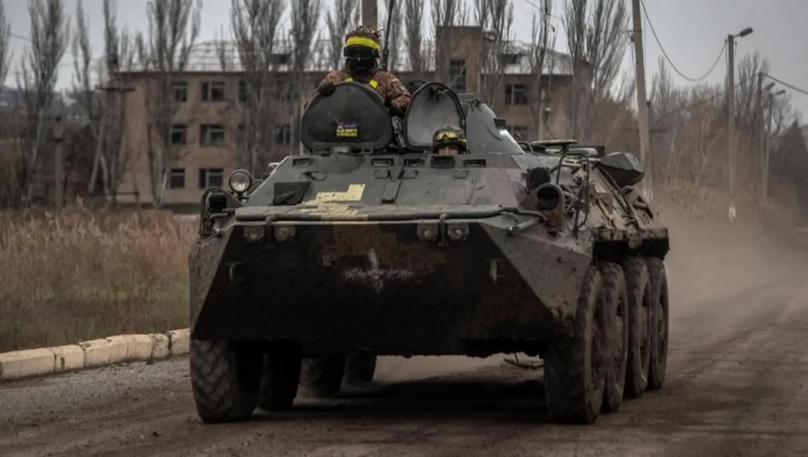
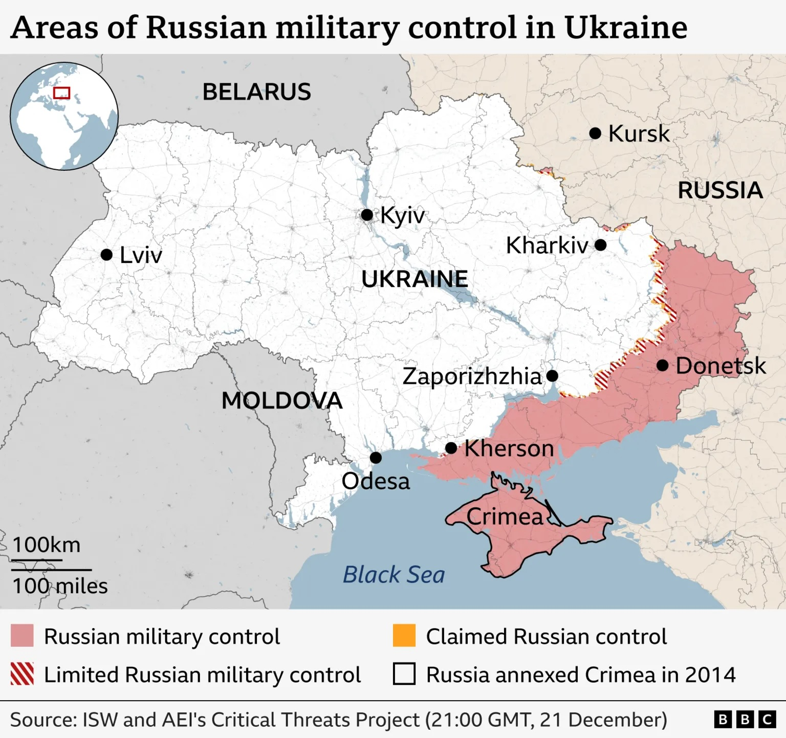
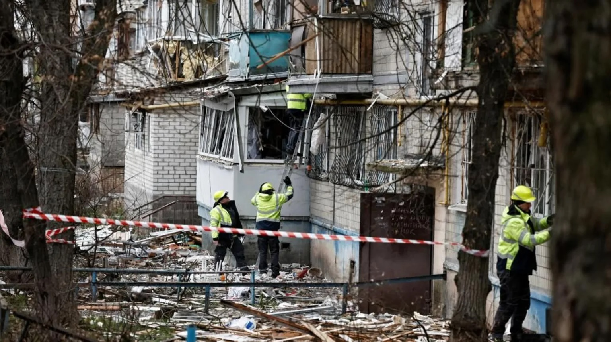

Ukraine lost another eastern town, Siversk

Ukrainian troops have withdrawn from the embattled eastern town of Siversk, as Russia continues its steady, slow, advance.
The Ukrainian military said on Tuesday it acted "to preserve the lives of our soldiers and the combat capability of units", adding that Russian forces had a "significant advantage in manpower".
The capture of Siversk brings Russia closer to the last remaining "fortress belt" cities of Sloviansk and Kramatorsk still in Ukrainian hands in the industrial Donetsk region.
Earlier in the day, officials said three people - including a young child - were killed in massive overnight Russian drone and missile strikes on Ukraine.
Russia launched a full-scale invasion of Ukraine in February 2022, and Moscow currently controls about 20% of Ukrainian territory.

In a statement, the Ukrainian military said Russian troops were continuing "active offensive actions" in the Siversk area "despite significant losses".
It added that Ukrainian "defence forces had exhausted the enemy during the fighting for Siversk".
Before the Russian invasion, Siversk had about 11,000 people.
Two weeks ago Russia had already reported control over the town - but Ukraine denied the claim at the time.
Siversk has been virtually wiped out as a town during many months of heavy fighting.
Moscow currently controls about 75% of the Donetsk region, and some 99% of the neighbouring Luhansk. The regions are collectively known as Donbas.
Russian leader Vladimir Putin has repeatedly warned that Ukrainian troops must withdraw from all of Donbas or Russia will seize it, rejecting any compromise over how to end the war.
Ukrainian President Volodymyr Zelensky has been under heavy pressure from his US counterpart Donald Trump to cede all of Donbas to Russia during ongoing Washington-led peace negotiations.
Zelensky has so far rejected any territorial concessions, and instead demanded iron-clad security guarantees for Ukraine in any potential settlement.
The peace negotiations - involving separate meetings of US officials with their Ukrainian and Russian counterparts - continued over the weekend but no breakthrough was reported.
According to Zelensky, the US had proposed a Christmas truce but Russia rejected the idea.
Overnight, Russia launched 635 drones and 38 missiles on a number of Ukrainian regions, Ukraine's air force said, adding that 621 of them were downed.
Local authorities in the central Zhytomyr region confirmed a child's death.
Regional head Vitaly Bunechko said the child "was taken to hospital, doctors fought for (the child's) life but could not save (the child) in the end". Five others were injured in the strike, he added.
Meanwhile, a 76-year-old woman was killed and three people injured when a house in the Kyiv region was struck, according to Ukraine's state emergencies service.
An attack in Khmelnytskyy, western Ukraine, killed a 72-year-old, regional administration head Serhiy Tyurin said.
Polish fighter jets were scrambled in response to missiles and drones targeting west Ukraine.
The Russian defence ministry said it had targeted Ukrainian "military-industrial complex plants and supporting energy facilities". It added that all the designated targets had been hit.
Meanwhile, Ukraine reportedly struck a petrochemical plant in Stravropol, southern Russia.
Videos shared by Russian media channels online showed large flames rising from the direction of the plant.
The region's governor, Vladimir Vladimirov, said a Ukrainian drone hit the plant and sparked a fire. No casualties were reported and residential buildings were left undamaged.
Oleksandr Chyrvonyi, who lives in the city of Zaporizhzhia close to the front line, told the BBC that Monday night was "an extremely unpleasant experience".
"I had four or five hours' sleep - there were constant notifications waking me up that drones and cruise missiles were coming," he said, adding that most went past his city to western and central regions.
Power cuts are the new normal. Zaporizhzhia has around 10 hours of electricity out of 24, he said.
There is a "general feeling of the lack of civilisation", he continued, but said he tries to have "an illusion of a normal life".

With temperatures expected to fall to as low as -7C on Wednesday, Ukraine's energy operator warned of emergency power shutdowns "in all regions" and urged people to use energy "sparingly".
Acting energy minister Artem Nekrasov said it was the ninth large attack on Ukraine's energy system this year, and that supply in the Rivne, Ternopil and Khmelnytsky regions has been "almost completely" lost.
Ukrainian MP Oleksandr Merezhko told the BBC World Service that some areas could be without power "for days".
In the Ukrainian capital, many suspect the overnight attack is linked to Monday's killing of a top Russian general after a car bomb exploded in Moscow.
Lt Gen Fanil Sarvarov, the head of the armed forces' operational training department, died in the blast, which Russia has blamed on Ukraine. Kyiv has not commented.
Alex Smith, Jaroslav Lukivand, Mohamed Madi at the BBC
The Societal News Team 23DEC2025